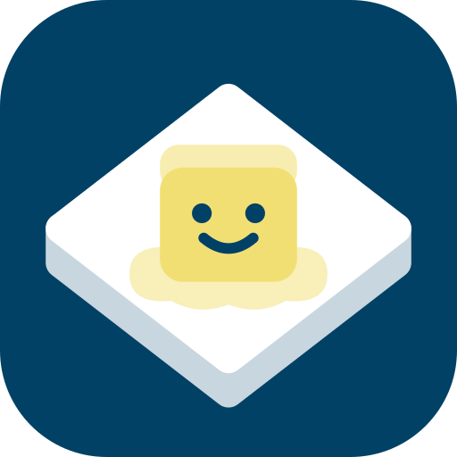

ToastMate
토스트마스터즈 역할 기록 · 아젠다 앱 와이어프레임
로고
모바일 · 한국어
0-1 로그인 (Google · 카카오)0-2 온보딩 · 내 정보 입력0-3 온보딩 · 클럽 연결1 홈2 모임 (운영진만 블록 꾹 눌러 이동)2-1 모임 · 블록 탭 팝업2-1b 모임 · 역할 없을 때2-2 모임 · 날짜 눌러 일정 추가2-2b 일정 추가 확인2-3 모임 · District 행사 점 탭 팝업2-4 오늘의 나 평가하기3 역할 예약하기3-1 연설 예약 팝업3-2 WOD 입력 팝업4 역할 시트 (Timer)5 결산6 기록 · Pathways7 설정8 역할자 텍스트 붙여넣기9 역할 확인 · 수정10 아젠다 플로우 편집11 미리보기 · 내보내기
Mobile · English
EN · 0-1 로그인 (Google · 카카오)EN · 0-2 온보딩 · 내 정보 입력EN · 0-3 온보딩 · 클럽 연결EN · 1 홈EN · 2 모임 (운영진만 블록 꾹 눌러 이동)EN · 2-1 모임 · 블록 탭 팝업EN · 2-1b 모임 · 역할 없을 때EN · 2-2 모임 · 날짜 눌러 일정 추가EN · 2-2b 일정 추가 확인EN · 2-3 모임 · District 행사 점 탭 팝업EN · 2-4 오늘의 나 평가하기EN · 3 역할 예약하기EN · 3-1 연설 예약 팝업EN · 3-2 WOD 입력 팝업EN · 4 역할 시트 (Timer)EN · 5 결산EN · 6 기록 · PathwaysEN · 7 설정EN · 8 역할자 텍스트 붙여넣기EN · 9 역할 확인 · 수정EN · 10 아젠다 플로우 편집EN · 11 미리보기 · 내보내기